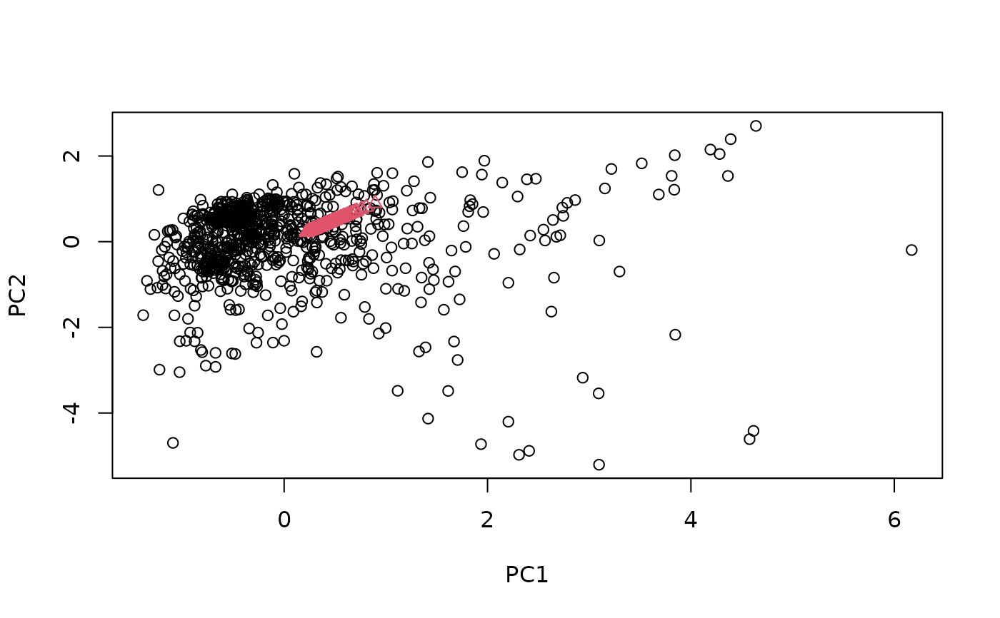
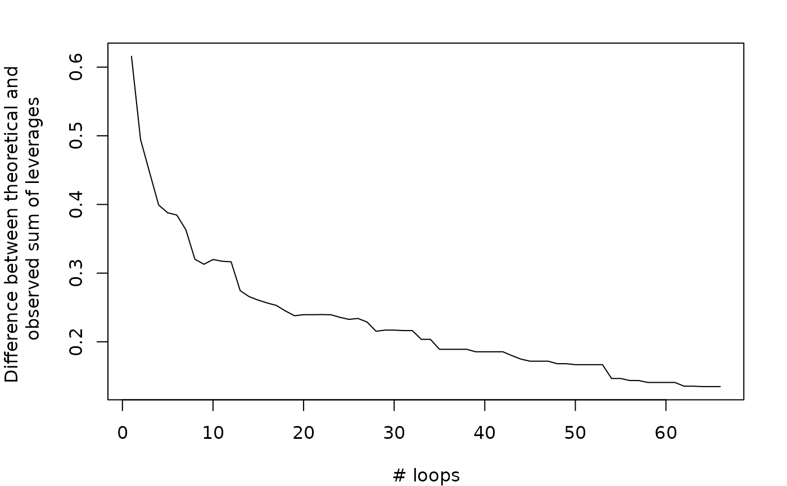

Select calibration samples from multivariate data using the Puchwein algorithm
puchwein(X,
pc = 0.95,
k,
min.sel,
details = FALSE,
.center = TRUE,
.scale = FALSE)a matrix from which the calibration samples are to be selected (optionally a data frame that can be coerced to a numerical matrix).
the number of principal components retained in the computation of
the distance in the standardized Principal Component space (Mahalanobis
distance).
If pc < 1, the number of principal components kept corresponds to the
number of components
explaining at least (pc * 100) percent of the total variance
(default = 0.95 as in the Puchwein paper).
the initial limiting distance parameter, if not specified (default), set to 0.2. According to Puchwein, a good starting value for the limiting distance is \(d_{ini} = k(p-2)\) where \(p\) is the number of principal components
minimum number of samples to select for calibration (default = 5).
logical value, if TRUE, adds a component in the output list
with the indices of the objects kept in each loop (default to FALSE).
logical value indicating whether the input matrix must be centered before Principal Component. Analysis. Default set to TRUE.
logical value indicating whether the input matrix must be scaled before Principal Component Analysis. Default set to FALSE.
a list with components:
'model': indices of the observations (row indices of the input
data)
selected for calibration
'test': indices of the remaining observations (row indices of the
input data)
'pc': a numeric matrix of the scaled pc scores
'loop.optimal': index of the loop producing the maximum difference
between the observed and
theoretical sum of leverages of the selected samples
'leverage': data frame giving the observed and theoretical
cumulative sums of leverage of the points selected in each loop
'details': list with the indices of the observations kept in each
loop
The Puchwein algorithm select samples from a data matrix by iteratively eliminating similar samples using the Mahalanobis distance. It starts by performing a PCA on the input matrix and extracts the score matrix truncated to \(A\), the number of principal components. The score matrix is then normalized to unit variance and the Euclidean distance of each sample to the centre of the data is computed, which is identical to the Mahalanobis distance \(H\). Additionally, the Mahalanobis distances between samples are comptuted. The algorithm then proceeds as follows:
Choose a initial limiting distance \(d_{ini}\)
Select the sample with the highest \(H\) distance to the centre
Remove all samples within the minimum distance \(d_{ini}\) from the sample selected in step 2
Go back to step 2 and proceed until there are no samples/observations left in the dataset
Go back to step 1 and increase the minimum distance by multiplying the limiting distance by the loop number
It is not possible to obtain a pre-defined number of samples selected by the
method. To choose the adequate number of samples, a data frame is returned
by puchwein function (leverage) giving the observed and theoretical
cumulative sum of leverages of the points selected in each iteration. The
theoretical cumulative sum of leverage is computed such as each point has the
same leverage (the sum of leverages divided by the number of observations).
The loop having the largest difference between the observed and theoretical
sums is considered as producing the optimal selection of points (the subset
that best reproduces the variability of the predictor space).
The Puchwein algorithm is an iterative method and can be slow for large data matrices.
Puchwein, G., 1988. Selection of calibration samples for near-infrared spectrometry by factor analysis of spectra. Analytical Chemystry 60, 569-573.
Shetty, N., Rinnan, A., and Gislum, R., 2012. Selection of representative calibration sample sets for near-infrared reflectance spectroscopy to predict nitrogen concentration in grasses. Chemometrics and Intelligent Laboratory Systems 111, 59-65.
data(NIRsoil)
sel <- puchwein(NIRsoil$spc, k = 0.2, pc = .99)
plot(sel$pc[, 1:2])
# points selected for calibration
points(NIRsoil$spc[sel$model, 1:2], col = 2, pch = 2)

# Leverage plot
opar <- par(no.readonly = TRUE)
par(mar = c(4, 5, 2, 2))
plot(sel$leverage$loop, sel$leverage$diff,
type = "l",
xlab = "# loops",
ylab = "Difference between theoretical and \n observed sum of leverages"
)

par(opar)